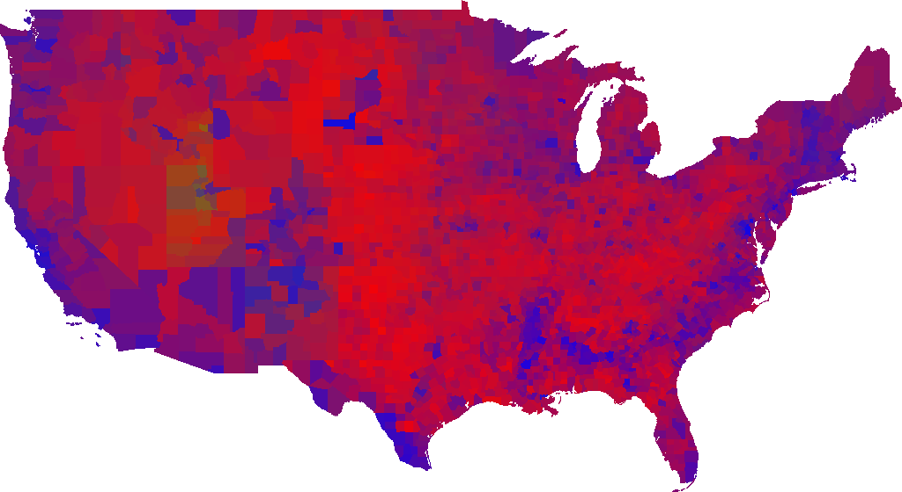

Using GPS coordinate data of US counties and county voting data, I created shapes based on county boundaries and added color based on voting proportions of the 2016 presidential election. I combined all the counties to make a map of the US that depicts proportional voting of the election. Blue for Democratic, red for Republican, green for other. I used Python for this project.
 Back